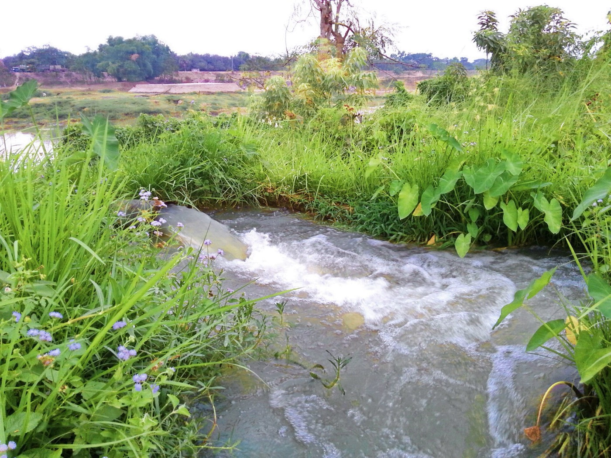
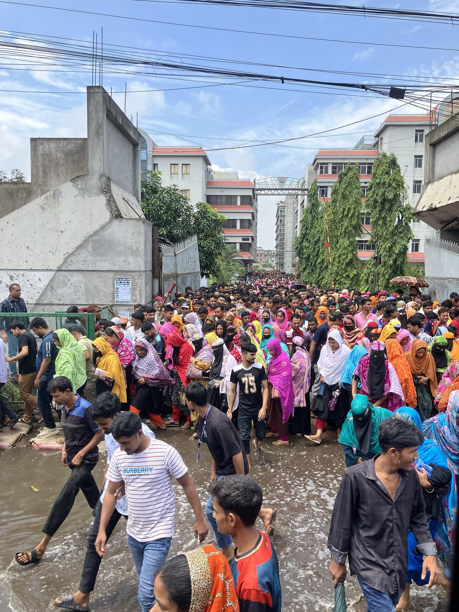
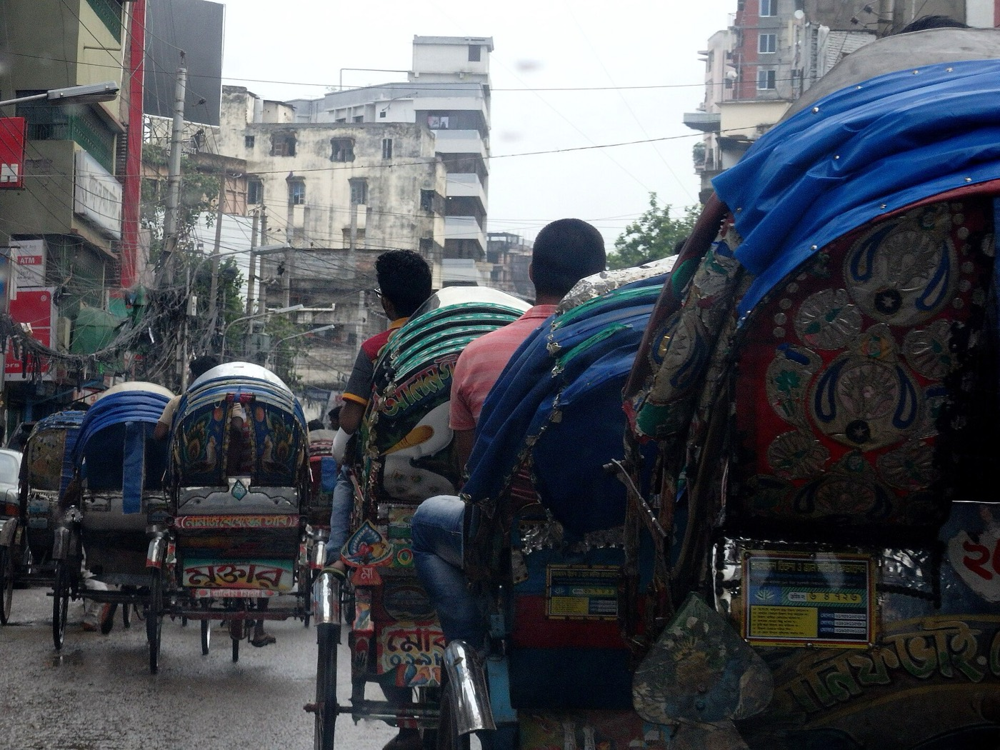

Bangladesh’s Tk 20 fuel hike: who pays, and what comes next
Diesel is up 35% and octane 37.5% since March, and BPC’s own formula says diesel is still Tk 52 short. This report covers affordability, inflation, food, industry, the grid, and the gap between public-sector and private wages.
Tk 165octane per litre, up from Tk 120 in March
45.8%of the average monthly salary buys one 50 L tank
27.8%of the diesel cost gap closed by this hike
9.6–10.7%estimated inflation by Dec–Jan, from 8.26%
Research pass 1 · figures marked “est.” are this report’s own calculationsSources and photo credits at the end
The short version
The hike is incomplete. The flat Tk 20 over-recovers on petrol, octane and kerosene but closes only about a quarter of the diesel gap. BPC may run out of money for letters of credit in October, so a second hike or a duty cut before the end of 2026 is near-certain.
The octane headline is the wrong lens. The real transmission runs through diesel (freight, buses, irrigation, generators), kerosene (the poorest households) and furnace oil (the grid).
The biggest delayed risk is Boro rice. Irrigation costs up about Tk 2,140 crore since March, with a frozen procurement price, point to pressure on the 2027 harvest.
The e-rickshaw surge and the load shedding form one loop, and the hike tightens it.
The distributional wedge. Public pay rose up to 142% two days before the hike, while the RMG minimum wage has not changed since 2023.
The unused lever. Tk 32.44/L of duty is still inside the diesel price. Removing it would close 62% of the remaining gap without raising the pump price.
A Padma Oil filling station in Bangladesh during a fuel shortage. Queues of motorcycles are the most visible sign of the shock, and motorcycles are what the octane headline actually describes.Photo: S.M.M.Musabbir Uddin · CC BY-SA 4.0 · Wikimedia Commons
Source: BPC gazettes as reported by The Daily Star and TBS. The shaded span marks the months when the monthly pricing formula was not applied.
Also relevant, and usually missed: furnace oil — the fuel now carrying the power grid — went Tk 70.10 → 94.69 (April) → 113.54 (May), +62% in two months. That is the loadshedding story's cost base.
Three hikes in five months. This is not "out of nowhere" in the sense of being unexplained, but it is a step-change in how the shock is being handled: the automatic pricing formula was introduced in March 2024 and is supposed to adjust monthly. It was not applied between March and September 2026 while global prices doubled. Six months of suppressed adjustment were then released in one Tk 20 move. The volatility the public experiences is manufactured by the decision to freeze, not by the formula.
The driver
The Hormuz conflict. Strait throughput collapsed from 21.6 mbd to 4.9 mbd (Q4 2025 → Q2 2026, −77%); Brent has traded $92–104 through September; QatarEnergy (≈60% of Bangladesh's LNG) declared force majeure; the Moheshkhali FSRU fire (21 July) compounded it. Freight rates rose alongside cargo prices. Bangladesh imports ~100% of its liquid fuel, so this is an imported shock, not a domestic policy shock — but the distribution of who absorbs it is entirely a domestic policy choice.
2. Where Bangladesh now sits on the affordability map
The earlier estimate of ~31% of monthly income per 50L tank is now stale in two ways: the price rose, and the implied wage denominator (~$190/month) was too generous for Bangladesh.
50L of octane at Tk 165 = Tk 8,250 = $67.07 (at 123.0 BDT/USD).
Income denominator
Value
% of monthly income per 50L tank est.
Work-time per 1L est.
Average gross monthly salary
Tk 18,000
45.8%
1h 54m
RMG minimum wage (unchanged since Dec 2023)
Tk 12,500
66.0%
2h 45m
New govt lowest basic (fully phased)
Tk 20,000
41.3%
1h 43m
Median monthly income
Tk 9,000
91.7%
3h 49m
(Work-time at 208 hrs/month.)
Figure 2Cost of 50 L of octane (Tk 8,250) as a share of monthly income
This report’s calculation from the income figures in the table above.
Figure 3A 50 L tank as a share of average monthly income, selected countries
The other countries’ figures come from the earlier comparison. Bangladesh uses Tk 165 octane against the Tk 18,000 average gross salary. The dashed outline shows the earlier estimate of 31%.
Against the tier table from the earlier analysis, Bangladesh has left the "Severe Stress" band (20–35%, 40–60 min/L) and entered "Extreme Fuel Poverty" (90–200+ min/L) — the Malawi/Zimbabwe/Mozambique band — on any denominator at or below the average wage. A year ago at Tk 125/L it was ~35% of the average wage. It is now ~46%.
But the 50L index badly misdescribes Bangladesh's actual pain, and this is the analytical crux. Private four-wheeler ownership is a top-decile phenomenon here; almost nobody in the affected population buys 50 litres of octane. The octane/petrol number is a comparative index, useful for ranking countries and useless for predicting household distress. The real transmission runs through three fuels the index ignores:
Diesel (+17.4%) → bus fares, truck freight, irrigation pumps, factory generators, fishing trawlers. This is the macro variable.
Kerosene (+14.8%) → the poorest households, directly, for lighting during 7–10 hour rural outages and for cooking off-grid. Kerosene is the most regressive line in the gazette and gets the least commentary.
Furnace oil (+62% since March) → the electricity tariff and the PDB's deficit.
Octane at Tk 165 is the headline. Diesel at Tk 135 and kerosene at Tk 155 are the economy.
3. Why this hike is incomplete — the most important forward-looking fact
BPC asked for far more than it got. Its own formula-implied September prices versus what the government set:
Fuel
BPC proposed
Government set
Gap remaining
Diesel
Tk 187
Tk 135
Tk 52
Petrol
Tk 150
Tk 160
(over-recovered)
Octane
Tk 154
Tk 165
(over-recovered)
Kerosene
Tk 146
Tk 155
(over-recovered)
Figure 4Diesel: what the government set, what BPC’s formula required, and the duty inside the price
Sources: BPC proposal as reported by The Daily Star (Sept 2026); duty figure for August 2026.
Read that carefully. The Tk 20 flat hike over-recovers on petrol, octane and kerosene and still leaves diesel Tk 52/litre short — only 27.8% of the diesel gap closed est. (Tk 20 of Tk 72). The flat-Tk-20 design taxes the motorcyclist and the kerosene user to partially cross-subsidise diesel, and still fails.
The supporting arithmetic (all internally consistent, which is a good sign the reported figures are real):
BPC loss: Tk 89/L on diesel pre-hike → ~Tk 69/L est. now.
BPC's working capital was Tk 12,368 crore on 6 September against a stated minimum need of Tk 15,000–20,000 crore (two months of imports). It has already drained Tk 19,500 crore out of development project accounts, leaving Tk 1,680 crore there. August import spend was Tk 7,603 crore versus Tk 2,741 crore a year earlier (+177%). BPC has said it risks running out of money to open letters of credit in October 2026.
Conclusion: a second hike (or an equivalent duty cut) is near-certain before end-2026. Tk 20 does not solve this. It buys roughly a quarter of the diesel gap and about Tk 700–750 crore/month of cash flow against a Tk 3,800 crore/month loss run-rate. Anyone planning on Tk 135 diesel being the new normal through the Boro season is planning on the wrong number.
The duty circularity — the unused lever
Duties and taxes on diesel in August were Tk 32.44/litre — ~24% of the new Tk 135 pump price. So the state collects Tk 32 per litre at the NBR window while losing Tk 69 per litre at the BPC window: a net public-sector loss of ~Tk 37/L est. with a Tk 32 wedge sitting in the middle of it. Zeroing the diesel duty would close 62% of the remaining Tk 52 gap est. with no increase in the pump price at all. That it has not been done is a revenue-protection choice, and it is the single most defensible thing to criticise about the policy design.
4. Transmission, channel by channel
Figure 5How each fuel reaches the economy
Octane and petrol are left out on purpose. They matter for the headline, not for the transmission.
4a. Inflation — expect the easing to reverse within 6 weeks
Starting point (August 2026): general 8.26%, food 7.02%, non-food 9.32% — general had eased two months running. Month-on-month the index was still +2.31%.
Decomposition of the likely effect est. — method shown, these are not reported figures:
Channel
Mechanism
Contribution to general CPI
Direct fuel purchase
~1.5–2.5% basket weight × ~15% avg price rise
+0.25 to +0.40 pp
Transport services
~5–6% weight × 8–15% realised fare rise
+0.40 to +0.90 pp
Food via freight + irrigation
~46% food weight × 0.8–1.4% cost pass-through
+0.40 to +0.65 pp
Cost-push subtotal
+1.05 to +1.95 pp
Pay-scale demand injection
~Tk 30–35k crore ≈ 0.55% of GDP, untargeted
+0.30 to +0.50 pp
Figure 6From 8.26% in August to an estimated 9.6–10.7% by December–January
Expected path est.: general inflation back to 9.5–10.5% by December–January, non-food leading (to ~10.5–11%), food re-accelerating on a longer lag. The two-month easing trend breaks in the October or November print.
Note the unusual feature: Bangladesh is taking a cost-push shock and a demand-push stimulus in the same quarter. The pay scale gazette landed 19 September; the fuel hike landed 21 September. Monetary policy can lean against one of those, not both, and leaning against the demand side means squeezing exactly the private-sector borrowers who are simultaneously eating the cost side.
4b. Transport fares — the gazette will be ignored
April's precedent gives a clean pass-through ratio: diesel +15% → gazetted metro bus fare +4.5% (Tk 2.45 → 2.56/km). Pass-through ≈ 0.30 of the diesel move est.. Owners had demanded 28 paisa and received 11.
Applying that to +17.4% est.:
Dhaka/Chattogram metro: Tk 2.56 → ~Tk 2.69/km
52-seat inter-district: Tk 2.23 → ~Tk 2.35/km
Owners will likely demand ~25–30 paisa again.
Launch fares: a further ~18–20 paisa/km adjustment, following the April pattern.
What people will actually pay is higher than that. The gazette sets a per-km rate; conductors set a minimum fare. Fares "surged unchecked" after April, and the 2022 record hike produced realised increases up to 22% against much smaller gazetted moves. For a Dhaka commuter on a 20 km/day round trip, the gazetted increase is ~Tk 60/month, but a minimum-fare round-up from Tk 10 to Tk 15 on two legs is Tk 260–300/month est. — 2–2.4% of an RMG minimum wage est., from the bus alone. CNG-vehicle fares are officially frozen, which in practice means the meter stays ignored and drivers negotiate upward regardless.
4c. Food and the Boro time bomb — the effect is mostly ahead of us
This is the channel most likely to be underestimated in the next six weeks, because its cost has already been incurred but its price effect arrives in 2027.

Pump-fed irrigation in Cumilla. About 70% of Bangladesh’s irrigation pumps run on diesel, and peak Boro irrigation falls in December–March.Photo: Mohammed Tawsif Salam · CC BY-SA 3.0 · Wikimedia Commons
~70% of irrigation pumps run on diesel (CPD); ~15 lakh shallow tube wells.
Boro is ~55% of national rice output (21–22 mn tonnes).
Peak irrigation is December–March. Planting decisions are made in November–December — i.e. at Tk 135 diesel, or whatever the next hike produces.
Cost arithmetic est.:
Baseline irrigation cost Tk 3,500–4,000/bigha, of which diesel is ~60–70% ≈ Tk 2,400.
This hike alone: +Tk 420/bigha ≈ +Tk 1,260/acre.
Since March (Tk 100 → 135): +Tk 840/bigha ≈ +Tk 2,520/acre.
Boro area ~4.9 mn ha ≈ 12.1 mn acres; ~70% diesel-irrigated ≈ 8.5 mn acres.
Aggregate additional direct irrigation cost on the coming Boro crop: ~Tk 1,070 crore from this hike, ~Tk 2,140 crore from the full March-to-now move est.
Per kg of rice: diesel-irrigation is ~Tk 3–4 of a ~Tk 32–35/kg production cost; +35% on that is +Tk 1.0–1.4/kg of production cost est..
And the squeeze closes from the other side: the government held the Boro procurement price at the old level despite higher production costs. Rising input cost + fixed output price = margin compression → acreage and intensity risk → a weaker Boro harvest in April–June 2027 → rice imports → forex demand → pressure on the taka → higher fuel import cost in taka. That loop closes.
Compounding: regional fuel shortages already pushed per-bigha irrigation cost to Tk 6,000 in places, and diesel has been selling Tk 15–80/litre above the regulated price in rural markets. The gazette price of Tk 135 is a floor, not a ceiling, wherever supply is short — which is precisely where the BPC LC crisis bites.
4d. Industry, RMG, and the LDC collision

Garment workers leaving a factory at break. The RMG minimum wage has stayed at Tk 12,500 since December 2023.Photo: Nahid Sultan · CC BY-SA 4.0 · Wikimedia Commons
The export sector is being hit on four sides simultaneously, and the fuel hike is only one of them:
Energy shortage has already cut RMG output 20–30%; knit composite and woven washing plants are at ≤50%. 71 of 143 power plants are idle or derated.
Generator diesel costs pump price plus a ~Tk 10/L scarcity premium → effectively Tk 145/L. A factory reported at Tk 40,000/day of generator fuel now runs ~Tk 47,000/day est.; one at $25,000/day (Tk 30 lakh) runs ~$29,300/day est..
Freight: a 15-tonne truck on Dhaka–Chattogram (250 km at ~3 km/L) burns ~83L one way → +Tk 1,660/trip est., ~6% of a typical charter — but realised freight rates will rise 8–12% est. because empty return legs and driver costs compound. Add international ocean freight surcharges from Hormuz.
LDC graduation on 24 November 2026 — nine weeks away. EU/UK/Canada grace periods run to 2029, so tariffs don't bite immediately, but buyers price forward and reallocate sourcing now. Post-transition tariffs of 9–12% (EU), 7–13% (Japan), 16–18% (Canada) against estimated export losses of 6–14% (~$1–8bn/yr).
Industry reaction is already on record: BCI's Anwar-ul Alam Chowdhury Parvez on a "more than 15% increase without consulting anyone" and lost export competitiveness. The structural point: Bangladesh's RMG advantage was never energy-efficiency, it was labour cost. An energy-cost shock erodes the margin that the labour-cost advantage generates, at the exact moment tariff preferences begin to lapse and while Vietnam/India/Pakistan are moving faster on renewables. That is the worst possible sequencing, and it is why the 3.9% growth forecast (cut from 4.5–4.6%) and the projected 600,000 job losses are credible rather than alarmist.
4e. Power: the autorickshaw feedback loop

Rickshaw traffic in Hatirpool, Dhaka. Battery conversions of this fleet are how low-income households keep moving through the petrol shock.Photo: mohigan · CC BY-SA 3.0 · Wikimedia Commons
The observation that autorickshaws are flooding the roads while loadshedding spikes is not two coincidental problems. It is one reinforcing loop, and the fuel hike tightens it.
The operating-cost wedge. At Tk 165/L and ~15 km/L, a petrol three-wheeler costs ~Tk 11/km in fuel est.. A battery three-wheeler draws 4–9 kWh/day for 100+ km — at Tk 8–9/kWh that is ~Tk 0.4–0.8/km est., and for the ~93% of Dhaka charging points that are illegal (48,136 unauthorised vs 3,300 authorised), the marginal electricity cost to the operator is effectively zero. The wedge was already 15:1. This hike widened it by another 14%.
Figure 7Energy cost per kilometre, by vehicle
This report’s estimates. The metered range assumes 100–110 km/day.
The second loop, running in parallel: loadshedding → factories and shops fire up diesel gensets → diesel demand rises precisely when BPC cannot fund October LCs → physical shortage → black-market premiums (the reported Tk 15–80/L over gazette) → effective diesel price far above Tk 135 for the people with the least buying power.
Two things worth saying that cut against the obvious reading:
The e-rickshaw surge is the poor's hedge, not just a nuisance. It is the mechanism by which a household earning Tk 12,000/month keeps moving through a 38% petrol shock. 21% of battery-rickshaw drivers are ex-farmers — and farm incomes are being squeezed by the same diesel shock plus 2026's flood and crop damage. Suppressing the fleet without providing an alternative would transmit the oil shock to the informal poor far more completely than it currently does. The relocation-outside-metro idea addresses traffic and grid load while pushing the livelihood problem somewhere less visible.
The right fix is metering and charging infrastructure, not prohibition. The August 2026 solar-charging mandate is directionally correct but far too slow to matter this winter; ~5% of national generation cannot be moved to rooftop solar in a season.
Seasonal note: grid loadshedding should ease somewhat November–February as cooling demand falls — but January–March brings irrigation load back (both grid pumps and 15 lakh diesel pumps), and PDB is already seeking Tk 9,750 crore to clear dues ahead of the Boro season. The crunch does not end; it changes shape and moves to the countryside.
4f. Macro, forex, growth
Reserves: ~$29.5bn (IMF BPM6). Taka: ~123/USD, −1.09% y/y — notably stable, and being defended (Bangladesh Bank bought $4.3bn from the interbank market this fiscal year).
The oil bill: August BPC import spend Tk 7,603 crore ≈ $618mn in one month, against ~$223mn a year earlier. If sustained, that increment is ~$4.7bn/year ≈ 16% of the entire reserve stock est.. This, not the subsidy line, is the binding constraint, and it is why "conserving foreign exchange" appears in the government's rationale.
What the hike actually saves in forex: short-run diesel price elasticity of −0.1 to −0.2 implies volume −2 to −3.5% → ~$150–250mn/year est.. Real but second-order against a $4.7bn increment. The hike is a fiscal measure dressed partly as a BOP measure.
Smuggling: genuinely resolved. Bangladesh diesel at Tk 135 versus India's Tk 134.76 equivalent is parity — the pre-hike Tk ~20/L arbitrage that was pulling subsidised diesel across the border is gone. Regional comparison: Myanmar Tk 164.83, Nepal Tk 161.24, Pakistan Tk 185.48. Bangladesh is now the cheapest diesel in the neighbourhood by a hair rather than by a smuggler's margin.
Remittances: Gulf states supply ~50% of inflows (~3% of GDP) and are themselves the conflict zone. The oil shock raises the import bill and threatens the inflow that pays for it — the two sides of the current account moving the wrong way together.
Poverty: projected escapes from poverty in FY2026 cut from 1.7mn to 0.5mn. Real wages for low-income and unskilled workers are already negative across agriculture, industry and services.
5. The distributional wedge: the pay scale and the pump
The two events are 48 hours apart and they are the same fiscal decision seen from opposite ends.
What government employees got (National Pay Scale 2026, gazette 19 September, effective 1 July):
Grades 1–10: basic up to +100%. Grades 11–20: up to +142%.
24 lakh employees + 9 lakh pensioners. First pay award in 11 years.
Cost: Tk 1,05,580 crore, phased over three years (50% of the basic increase in year one, remainder in year two, allowances in year three).
What the private sector got: no mechanism. There is no general increment system outside the public sector. National wage growth 8.05% against 8.26% inflation — real wages negative before this hike. The RMG minimum wage is still Tk 12,500, set December 2023, with a 9% annual increment against cumulative inflation well above that since. ~85% of Bangladeshi employment is informal, i.e. outside any wage-setting mechanism at all.
Figure 9Government pay, consumer prices and the RMG minimum wage, index Dec 2023 = 100
Price index is approximate cumulative CPI. Government line is the grade-20 basic under the phased 2026 award.
The arithmetic of the wedge est., taking the first-year phased basic (Tk 8,250 + 50% of the Tk 11,750 award ≈ Tk 14,125) for a grade-20 employee versus an RMG worker on Tk 12,500:
Govt grade 20
RMG worker
Monthly basic, Sept 2026
~Tk 14,125 (→ Tk 20,000 by year 2)
Tk 12,500
Nominal change since 2023
+71% (→ +142%)
+0% (plus 9%/yr increment)
Real change after ~30% cumulative inflation
positive
sharply negative
Bus-fare + food pass-through from this hike
absorbed by the award
absorbed by the household
And the connection is not merely rhetorical. The pay award costs Tk 1,05,580 crore against a revenue shortfall of Tk 88,000 crore on a Tk 5,03,000 crore target last year. A government that has just committed 1.05 lakh crore to its own payroll, cannot raise revenue, and is facing a Tk 31,000–40,000 crore annual BPC bleed has no fiscal room left to keep absorbing the oil shock. The pay rise did not cause the fuel hike — Hormuz did — but it removed the cushion that would have let the state phase the shock more gently, and it did so in favour of 33 lakh people (~2% of the population, ~4% of the labour force) who are also the group most insulated from the consequences.
That is the honest form of the grievance: the state indexed its own employees' incomes to inflation and left everyone else to absorb an imported shock at the pump. The government's own framing — "keep the situation at a tolerable level" — should be read as a statement about whose tolerance.
Politically, the constraint is visible: the PM publicly apologised over the electricity and fuel crisis on 5 September and warned against unrest; this is the second hike since the government took office in February 2026; fuel-price protests are running globally (CNN, mid-September). A rollback is unlikely on fiscal grounds. What is likely instead is targeted compensation — the Family Card digital safety-net database (launched 10 March 2026) is the obvious delivery rail, and is what CPD's Fahmida Khatun and others are pushing for.
6. What to watch, and when
Figure 10The next six months
Window
Event
Why it matters
Oct 2026
BPC letter-of-credit funding exhausts
Physical supply risk; forces either a cash injection, a duty cut, or another hike
Oct–Nov 2026
BBS CPI prints
First hard evidence of pass-through; expect the easing trend to break
Oct 2026
Gazetted bus/launch fare revision
Watch the gap between gazetted and realised fares
24 Nov 2026
LDC graduation
Cost shock meets preference erosion
Nov–Dec 2026
Boro planting decisions
Acreage response to Tk 135+ diesel → 2027 food prices
Dec 2026–Mar 2027
Peak irrigation + PDB dues
Diesel demand spike into a funding-constrained BPC
Ongoing
Brent, Hormuz throughput (4.9 vs 21.6 mbd), QatarEnergy force majeure, Moheshkhali FSRU repair
Goldman: Brent >$120 in 2027 if Gulf output stays 4 mbd below prewar
Scenarios est.:
Base case (~55%) — Brent $95–110. A further Tk 10–20/L or an equivalent diesel duty cut by December. Inflation peaks 9.5–10.5% in Q1 2027. Growth 3.9% or slightly below. Boro acreage roughly holds on the back of emergency support; food inflation re-accelerates modestly in H1 2027.
Adverse (~30%) — Brent >$120, Hormuz stays constricted. Diesel to Tk 160–180. Inflation 12%+. Physical rationing and queues. Boro contraction → rice imports → taka pressure → the loop closes. Serious unrest risk, given the pay-scale contrast is already a live grievance.
Relief (~15%) — Hormuz reopens, Brent falls to $70s. The formula cuts prices (it has cut before — Tk 2/L under automatic pricing). But BPC's accumulated Tk 22,876 crore hole means pass-through of relief will lag far behind pass-through of pain, because the deficit gets recovered first. Expect asymmetry and expect people to notice it.
7. Policy levers, ranked by effectiveness per taka
Cut or zero the diesel duty (Tk 32.44/L). Closes 62% of the remaining gap est. with no pump-price increase. Costs the NBR revenue it is largely recycling into BPC losses anyway. Highest-value, lowest-political-cost move available and currently unused.
Targeted cash transfer via the Family Card rail rather than a universal pump subsidy. The universal subsidy's benefit scales with fuel consumption, i.e. with income — Zahid Hussain's point that it "disproportionately benefited wealthier groups" is correct. Direct transfers deliver more protection per taka to the bottom half.
A Boro diesel/irrigation support card for the 15 lakh diesel STW operators, decided in November, not February. There is a 2022 precedent. Cheaper than importing the rice that a contracted Boro harvest would require.
Raise the Boro procurement price to restore farmer margin. Holding it while inputs rise is the most direct way to shrink next year's harvest.
Legalise, meter and tariff e-rickshaw charging (48,136 illegal points in Dhaka alone). Converts 500 MW–1 GW of theft into billed revenue for PDB, makes the load visible to dispatch planning, and funds the solar-charging mandate — without destroying the livelihood of the fleet or the mobility hedge it provides the urban poor.
Publish the pricing formula's monthly workings. The damage from freezing March–September and then releasing Tk 20 at once is largely a credibility cost. A visible, small, monthly adjustment is far less politically explosive than an invisible, large, occasional one — and removes the "out of nowhere" perception that is itself a source of unrest.
Do not suppress the e-rickshaw fleet without a substitute. It is currently absorbing a large share of the shock on behalf of people who have no other option.
8. Summary
Bangladesh is absorbing an imported oil shock with no fiscal cushion, at the moment its export model loses its tariff preferences, with its grid running on the most expensive fuel it imports, and having just indexed 33 lakh public-sector incomes to inflation while leaving ~7.5 crore private and informal workers unindexed.
The Tk 20 hike is not the end of the adjustment — it is roughly a quarter of it on diesel. The affordability numbers place Bangladesh in the world's most fuel-stressed tier. But the number that will actually determine how bad 2027 is isn't Tk 165 octane; it's whether Tk 135 diesel (or Tk 155, or Tk 180) is what a farmer in Rangpur faces when they decide in November how many bighas of Boro to plant.